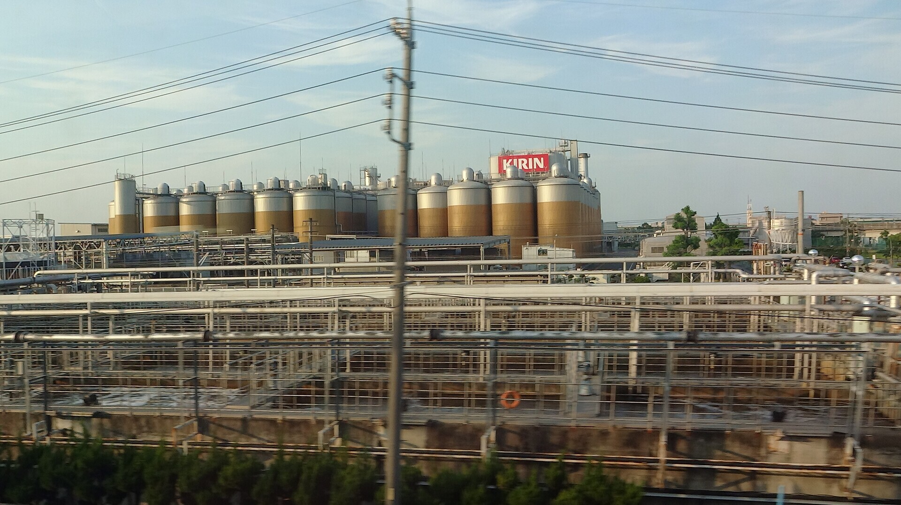

- 区间
- 名古屋 → 岐阜羽岛
- 座位侧
- E座・往新大阪方向右侧，往东京方向左侧
- 通过时间
- 搭Nozomi从东京出发后约98分钟
- 可见时间
- 几秒钟希望号的概略时间；会随车速、天气与遮蔽物而变动。
背後的故事
那些巨大的银色储槽有什麽用途？
爱知县清须市寺野的麒麟啤酒名古屋工厂，是麒麟的主要酿酒厂之一，生产与出货能力在大名古屋地区名列前茅。厂区约29公顷（约六座东京巨蛋），啤酒发酵、贮藏与包装厂房，与生产清凉饮料的麒麟饮料东海工厂并立。从新干线最醒目的是铁路旁一整排巨大的圆柱形储槽。
从东京往新大阪时，接近名古屋至岐阜羽岛路段，开始留意右侧车窗（E席）。往东京时顺序相反，同样的E席在左侧。
观看重点
储槽究竟是什麽，里面发生什麽事
高大的银色槽是发酵与熟成槽。麦芽与水制成、富含糖分的麦汁在其中加入酵母，转变成啤酒。酵母在数天内将糖转为酒精与二氧化碳，之后啤酒在接近零度的环境贮存数周，熟成并调整风味。单一储槽可容纳数百千升，数十座成排排列，正是车窗里「巨大啤酒」印象的来源。
厂区负责完整流程：原料收受、酿造、发酵、熟成、过滤、装罐／装瓶／装桶与出货。名古屋工厂酿造麒麟代表品牌「一番搾」等主力产品，也定期生产限量季节啤酒。
酒厂提供预约参观。若银色储槽从车窗吸引你的目光，之后可以造访了解啤酒制程。最新参观内容与预约条件请查官方网站。
地图
位置一览
打开地图切换景点位置与新干线观赏位置。
你的车窗指南
别错过窗外风景
延伸阅读
参考资料
官方指引与车窗风景纪录。